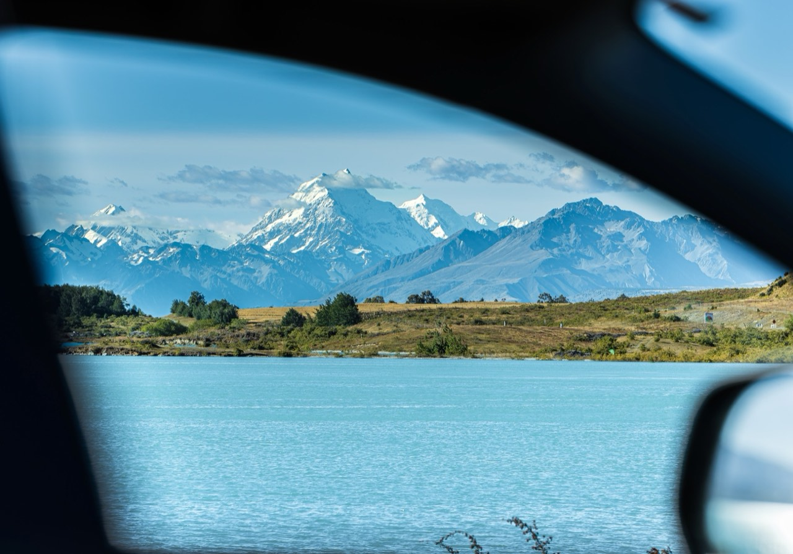
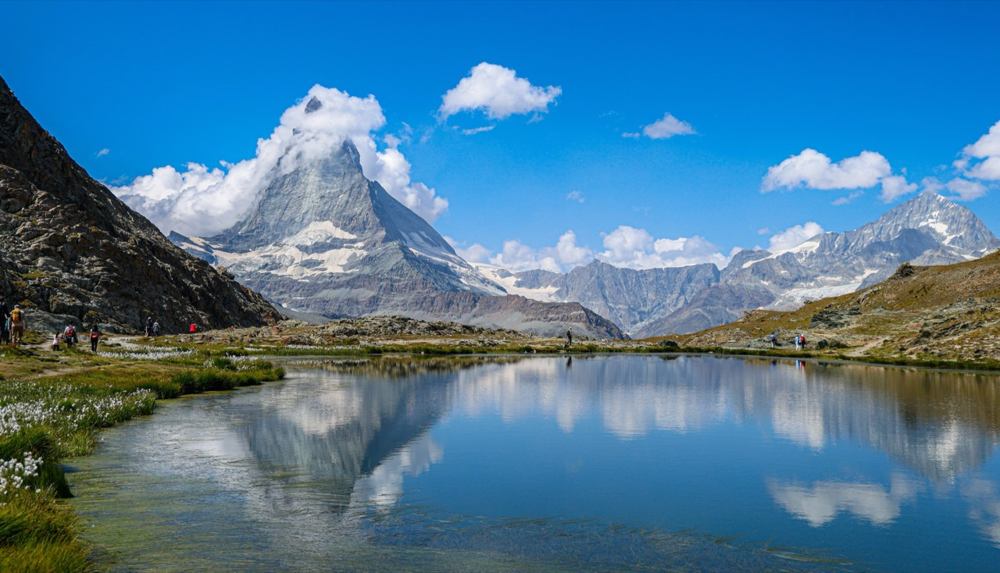
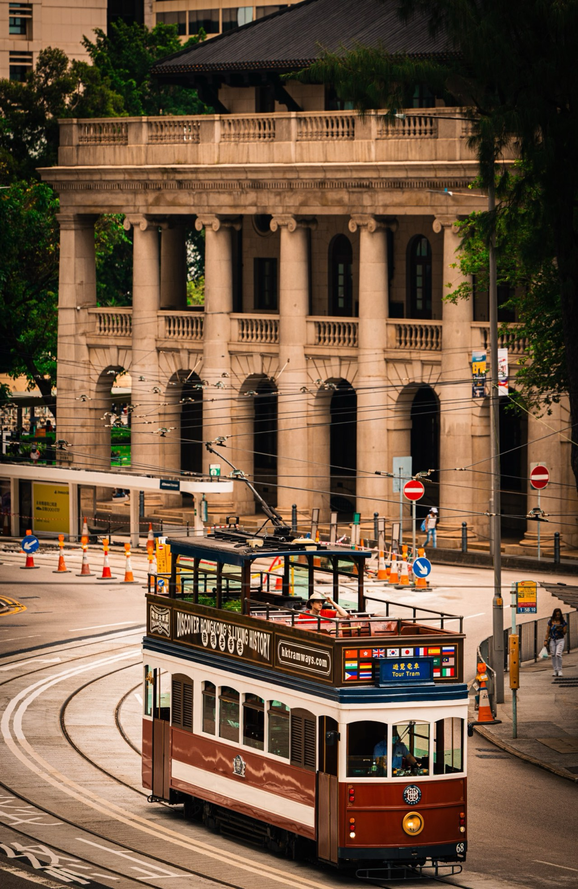
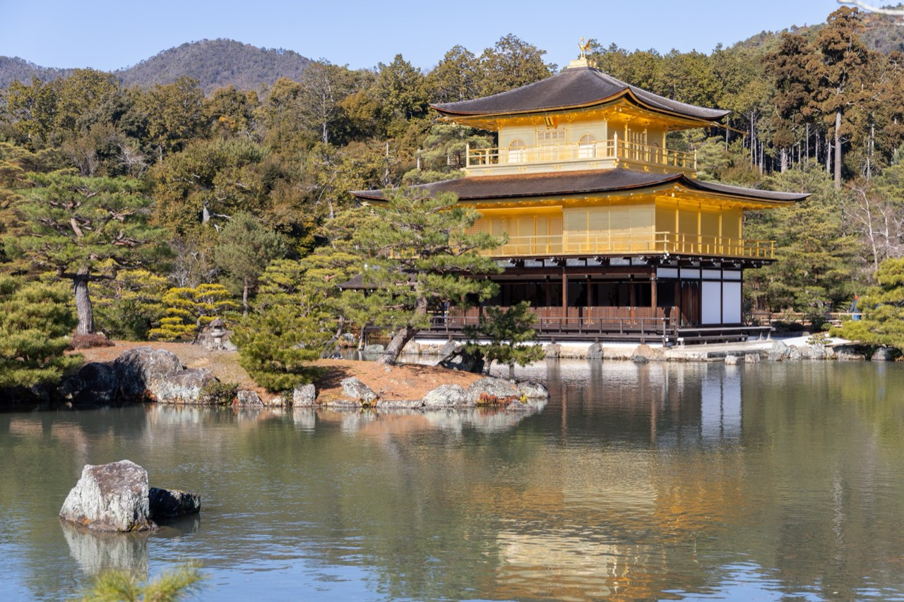
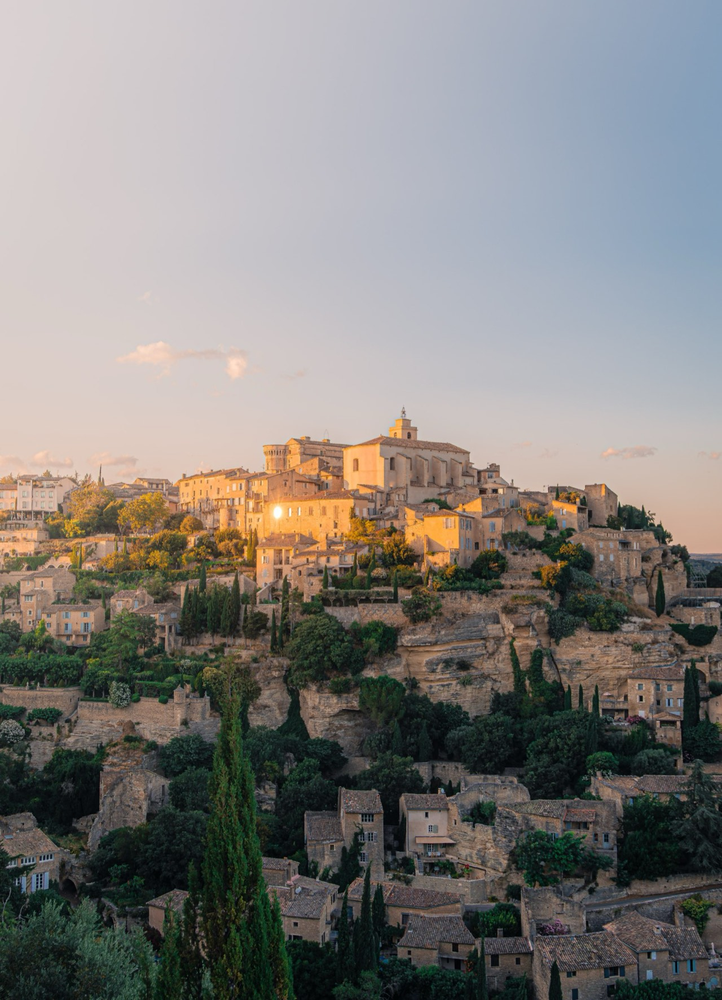
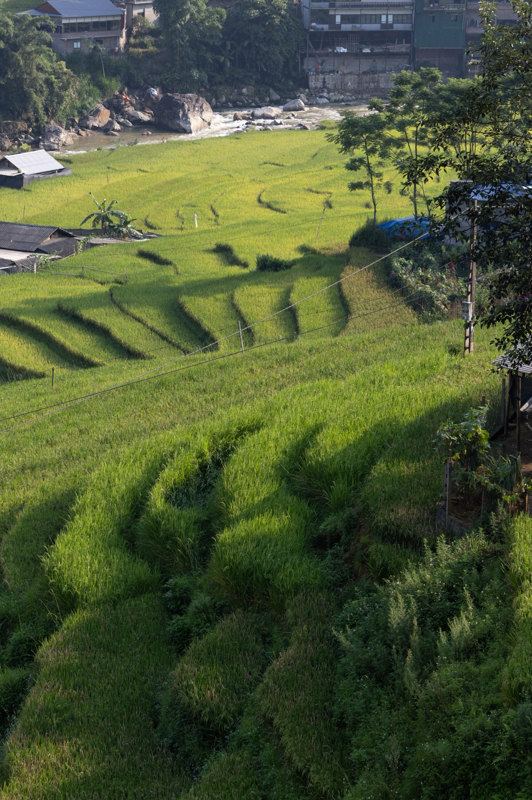
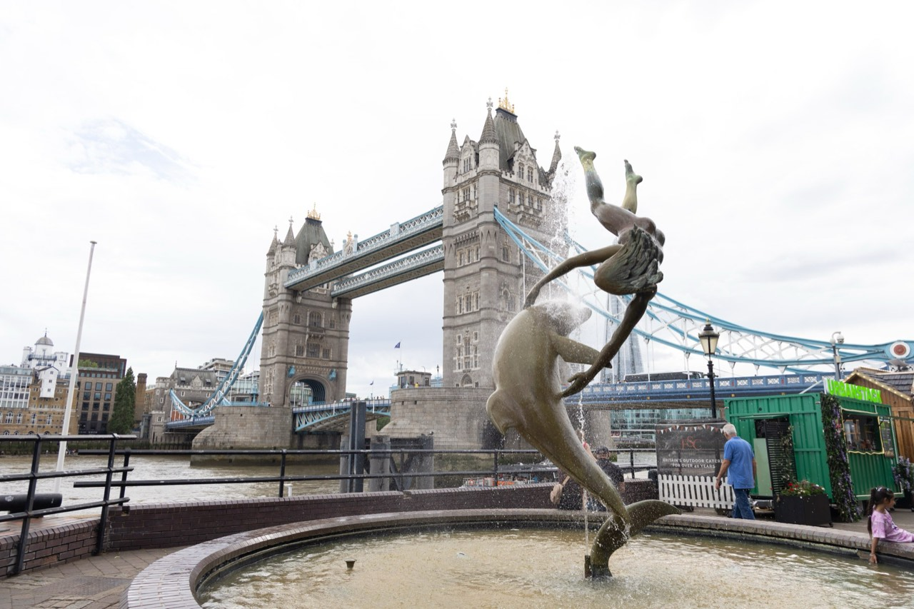

Where
Aoraki / Mount Cook
New Zealand
When
January 2026
How
Canon EOS R6 Mark II
RF 70-200mm F2.8 L IS USM
- Focal length
- 135mm
- Aperture
- f/5.6
- Shutter
- 1/500s
- ISO
- 125
Every photograph here has one.
Open any of them to read its own.





